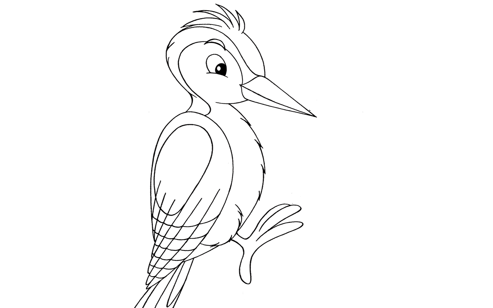

Robin Fogarty and Associates
Six Levels of Transfer
Near versus Far transfer.
Near transfer refers to transfer between very similar contexts, as for instance when students taking an exam face a mix of problems of the same kinds that they have practiced separately in their homework, or when a garage mechanic repairs an engine in a new model of car, but with a design much the same as in prior models. Far transfer refers to transfer between contexts that, on appearance, seem remote and alien to one another. For instance, a chess player might apply basic strategic principles such as "take control of the center" to investment practices, politics, or military campaigns.
Ollie, head in the Sand Ostrich, overlooks the opportunity to use the new idea. Ollie overlooks the application, either intentionally or unintentionally. In either case, Ollie does nothing with the idea and seems unaware of it's relevance. Ollie sometimes chooses not to use an idea because it seems counterproductive to him and thus becomes determined not to use the idea. In short, Ollie misses the opportunity for appropriate applications and never really uses the ideas back in the classroom. Like Ollie, teachers may learn about how to use data to inform their practice in the classroom but never actually go back to their school and use data that way.
 Dan, the Drilling Woodpecker, duplicates, copies exactly as it is learned. Dan duplicates the idea exactly as it has been presented. In fact, many times dan will actually ask the presenter if he may have a copy of the strategy or skill used in the workshop. Dan drills and practices again and again. Drill! Drill! Drill! Then he stops. In essence, Dan uses the idea as a single minded activity, not as a strategy that can be used, reused, and then used again, all in different situations and different ways. Yet this is an early level of simple transfer and must be applauded because the teacher is leaving the workshop with an idea to take back and use. One example of this level of transfer is when an eager teacher asks for copies of the scoring rubrics shown as examples during the workshop.
 Laura the Look Alike Penguin, replicates by tailoring slightly to fit needs.
Laura replicates the strategy by tailoring it ot her students or her content.
She tends to apply it in the same way, however, once she has slightly customized
it to fit those needs. She uses very similar kinds of applications over and over
again, never really branching out more creatively. Like a string of penguins,
all her applications seem to look alike. Laura just does not transfer the idea
into different situations. Her transfer, however, is both real and practical,
as it fits her specific circumstances, so Laura should be commended for that.
One example of Laura's tailoring may be found in her using a concept map by
mapping the plot of the story. Although Laura may change the story, she never
uses the concept map for any other applications other than story plots.
Laura the Look Alike Penguin, replicates by tailoring slightly to fit needs.
Laura replicates the strategy by tailoring it ot her students or her content.
She tends to apply it in the same way, however, once she has slightly customized
it to fit those needs. She uses very similar kinds of applications over and over
again, never really branching out more creatively. Like a string of penguins,
all her applications seem to look alike. Laura just does not transfer the idea
into different situations. Her transfer, however, is both real and practical,
as it fits her specific circumstances, so Laura should be commended for that.
One example of Laura's tailoring may be found in her using a concept map by
mapping the plot of the story. Although Laura may change the story, she never
uses the concept map for any other applications other than story plots.
Johnathan Livingston Seagull integrates subtly into existing repertoire. Jonathan often says, "I already do this." Like Jonathan, the teacher subtly integrates this strategy into his or her classroom with a raised consciousness about it and its use. This teacher has an acute awareness of the strategy and a renewed interest in it. In fact, he or she may use the strategy with deliberate refinement and skillful integration. The strategy is blended into an existing repertoire and never considered a new idea but rather an old idea revisited. Bloom's taxonomy of questions is an example of this kind of strategy. Teachers often think they know it and use it, so when it is introduced into a session, they recognize it as a familiar strategy.
Cathy, the Carrier Pigeon, maps (propagates) the idea intentionally and deliberately. Cathy is an eager and proactive participant who actively maps ideas across her content or grade level. This teacher propagates ideas and takes them from one application to another, consciously transferring ideas to various situations and content areas. This level of transfer is characterized by a teacher who ·' carries the strategy to various situations as part of his availablerepertoire. One example of this is the teacher who learns about the multiple intelligencesv approach to learning and maps the use of these intelligences into various lessons throughout the unit.
Sam, the Soaring Eagle, innovates and invents marvelous applications. Sam is a risk taker who finds innovative ways to use the new strategy. This level of transfer shows evidence of "flying with an idea" and putting ideas into action. It demonstrates how applications may go beyond the initial conception and create truly inventive uses for the idea. Sam enhances, invents, anddiverges from the initial idea, fully achieving its full value. To illustrate this level of transfer, a teacher might learn about higher-order thinking skills, and instead of simply using them with her students, she alsocharges them with the task of identifying the kinds ofhigher-order thinking an author exhibits in his writing. This is farabove the original idea of using higher-order thinking in classroom interactions.